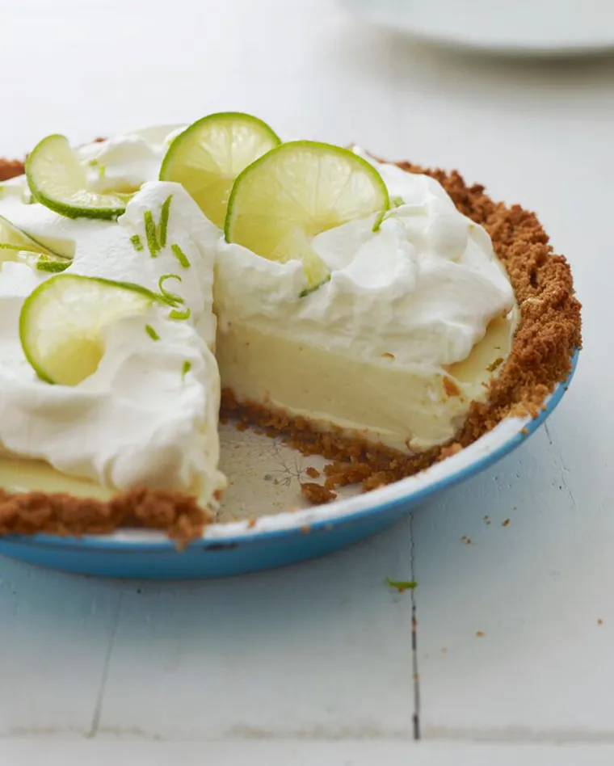

Key Lime Pie

Description
I use Persian limes, otherwise known as ordinary supermarket limes, to make my “
Key lime” pie. Unless you live in the Florida Keys, key limes are near impossible
to find. Furthermore, they’re so tiny that you’d need to juice at least twenty of
them for this recipe. No thank you! Ordinary limes make an exceptional Key lime pie,
and they are a much better alternative to bracingly tart bottled Key lime juice. This
pie tastes every bit as authentic as the real deal — plus it’s easier to make.
Ingredients
For the crust:
- 1½ cups finely crushed graham cracker crumbs, from about 12 whole graham crackers
- ⅓ cup packed light brown sugar
- 4 tablespoons unsalted butter, melted
For the filling:
- Two 14-oz cans sweetened condensed milk
- 1 cup plain Greek yogurt (2% or whole milk)
- 1 tablespoon grated lime zest
- ¾ cup fresh lime juice
For the topping:
- 1 cup cold heavy cream
- 2 tablespoons confectioners' sugar
- 1 teaspoon grated lime zest
- 8 to 10 thin lime slices
Step-by-step instructions
For the crust:
- Preheat oven to 375 °F and set an oven rack in the middle position.
- In a medium bowl, combine the graham cracker crumbs, brown sugar, and melted butter
- Stir with a fork first, and then your hands until the mixture is well combined
- sing your fingers and the bottom of a glass or dry measuring cup, press the crumbs firmly into the bottom and up the sides of a 9 x 1.5-inch (deep-dish) pie pan. The crust should be about ¼-inch thick.
(Tip: do the sides first.)
- Bake for 10 minutes, until just slightly browned. Let the crust cool on a wire rack.
For the filling:
- Lower the oven temperature to 350°F.
- In a large bowl, whisk together the sweetened condensed milk, yogurt, lime zest, and lime juice.
- Pour the thick mixture into the warm graham cracker crust.
- Bake for 15 minutes, until the filling is almost set; it should wobble a bit.
- Let cool at room temperature for 30 minutes, then place in the refrigerator to chill thoroughly, about 3 hours.
For the topping:
- In the bowl of an electric mixer, beat the heavy cream until soft peaks form.
- Add the confectioners’ sugar and beat until medium peaks form.
- Top the pie with the whipped cream.
- Decorate with the lime zest and lime slices.
- Store the pie in the refrigerator until ready to serve.
Back to the top
Main page